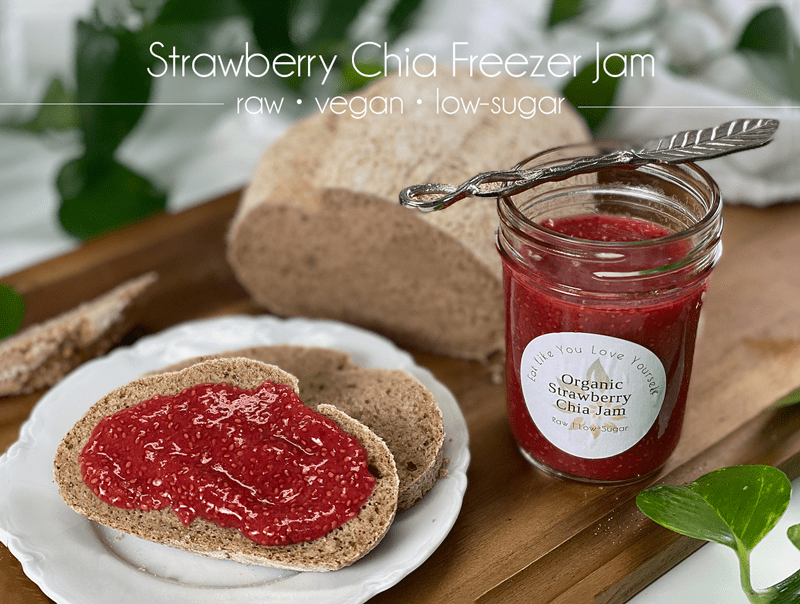
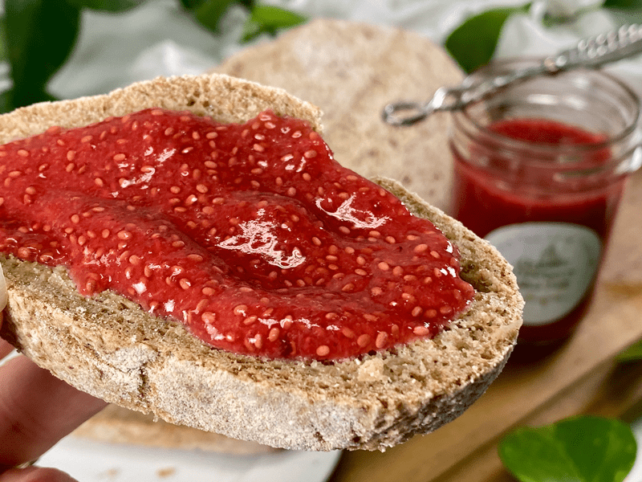
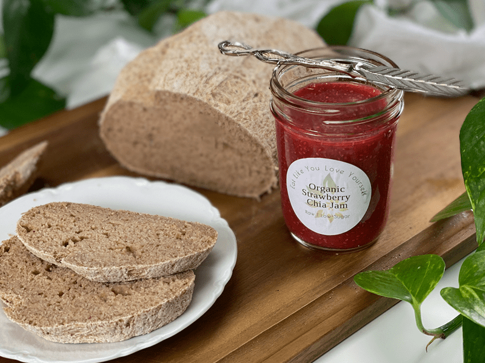
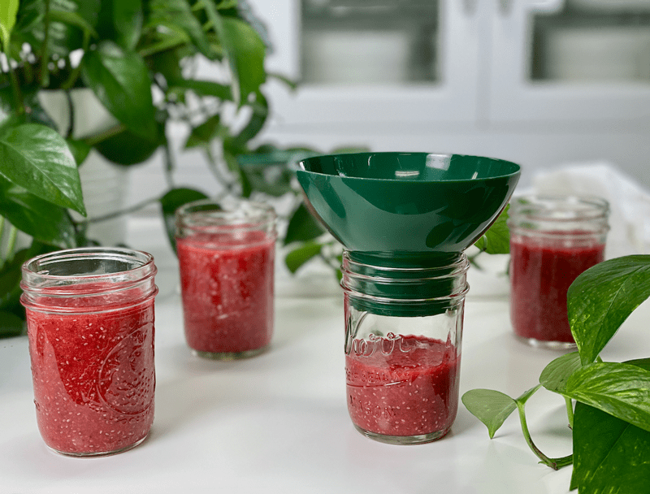

Strawberry Chia Freezer Jam | Raw | Low-Sugar
Organic strawberries, white chia seeds, a splash of maple syrup, freshly squeezed lemon juice, and a sprinkle of sea salt made this jam a special treat. I don’t think you can find an easier and healthier jam out there. Just add all the ingredients to the food processor, give ‘era spin, and you are set.

This recipe was born out of pure necessity. Last week, we had a freezer debacle that left me with over 40 pounds of thawed fruits (strawberries, blueberries, and our orchard cherries) and about 20 pounds of thawed veggies. As it goes with any debacle, I wasn’t prepared to deal with such an occurrence. I had to think quickly in order to handle all this freshly thawed food. I fired up the freeze-dryer for the veggies and for the fruit, I made endless trays of fruit leather and jam. Once I had it all packaged up, some of the food went into our own pantry, fridge, and freezer, and the rest was dispersed amongst our friends. As tragic as this felt in the being, the end result turned into multiple blessings.

Organic Strawberries
For this recipe, you can use either fresh or frozen strawberries, but make sure they are organic since strawberries (or any berry) is on the top Dirty Dozen List for pesticides. If you use frozen, drain the liquid (if any) before adding it to the recipe.
Quick Tips
- The best advice I can give you if freezing this jam is to freeze it in portions that you can use with a week of thawing.
- Make sure you use freezer-safe jars so the glass doesn’t crack.
- Since I was making a TON of jam, I decided to test the blending process in the blender and food processor. The food processor worked best, but it can be done in the blender if need be.
- As the jam sits in the fridge, it will thicken due to the chia seeds and the natural pectin found in the berries.
- This jam freezes and thaws without any change in texture or consistency.

How to Enjoy Strawberry Chia Jam
I hope you enjoy this quick, simple, and delicious jam. Please leave a comment below. blessings, amie sue
 Ingredients:
Ingredients:
Yields 2.5 cups
- 1/4 cup white chia seeds soaked in 1/2 cup water
- 2 cups organic strawberries
- 2 Tbsp maple syrup
- 1 Tbsp lemon juice
- 1/4 tsp Himalayan pink salt
Preparation:
- In a small bowl, combine the water and chia seeds. Stir and set aside to thicken.
- In the food processor fitted with the “S” blade, add the strawberries, maple syrup, lemon juice, and salt.
- Add the chia seeds once all of the water is absorbed, which takes about 10 minutes.
- Process everything together for about 30 seconds.
- Store in a mason jar in the fridge for 1 week or in a freezer-safe jar for 1-2 months. Enjoying it sooner than later will ensure a better flavor.

© AmieSue.com